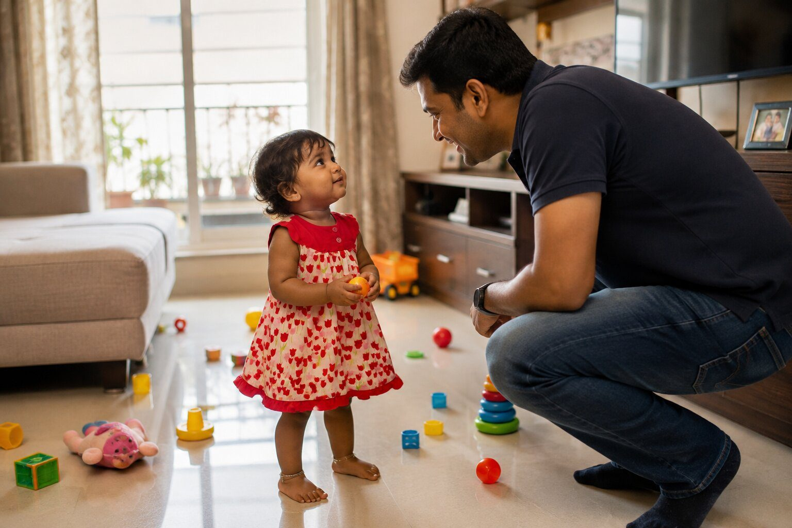

Yes...

Back in 2013, while I was living in the United States, I spent many of my weekends at my brother's home. His little daughter was around one and a half years old then. We spent hours playing together. Sometimes she would reach for something that could hurt her. I would gently say,
"No... don't do that. You'll get hurt."
She would stop...
walk towards me...
raise her little head...
look straight into my eyes...
and softly say,
"Yes..."
I'd smile.
"No."
She would make her eyes even bigger...
look into my eyes again...
and say,
"Yes..."
She wasn't asking me what was right. She already knew what she wanted to do. She just wanted me to change my answer. Back then, I laughed every time she did that.
Today...
when I look into my own mirror...
I wonder how often I've done the very same thing.
How often do I ask for advice...
already hoping for a particular answer?
How often do I keep asking different people...
until someone finally says,
"Yes."
Not because it is true. But because it is the answer I wanted to hear. Sometimes I'm not really searching for the truth. I'm searching for agreement.
I keep asking...
not because the answer isn't clear...
but because I don't like the answer I've already received.
Not everyone who says "Yes" to me wants the best for me. And not everyone who says "No" is against me. The people who love me the most may sometimes tell me the hardest truth. The people who simply agree with me may quietly leave me where I am. Truth is only one. A lie can wear many hats.
When I ask for advice...
am I honestly looking for the truth...
or am I secretly hoping someone will change the answer I don't want to hear?
How many "Yes" answers have I collected...
simply because I refused to accept the first truthful "No"?